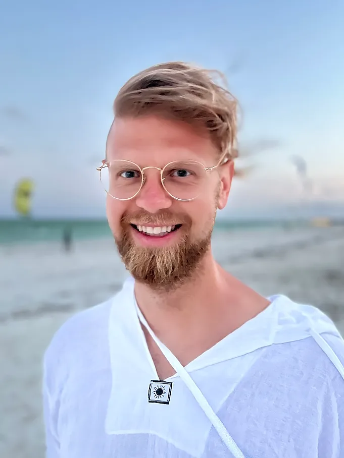
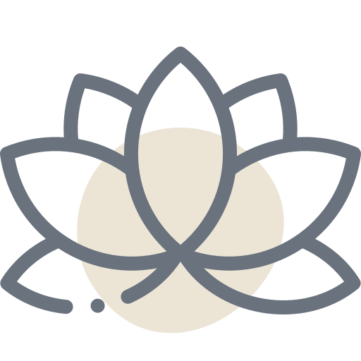
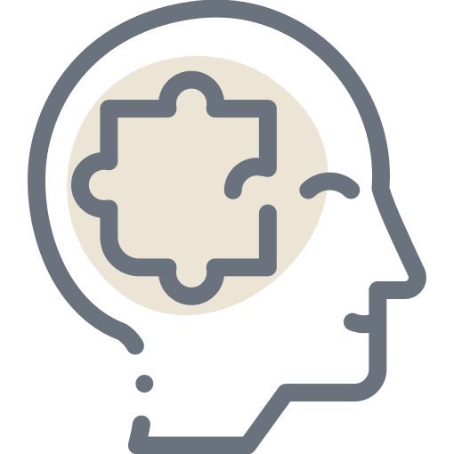
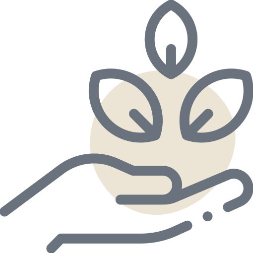
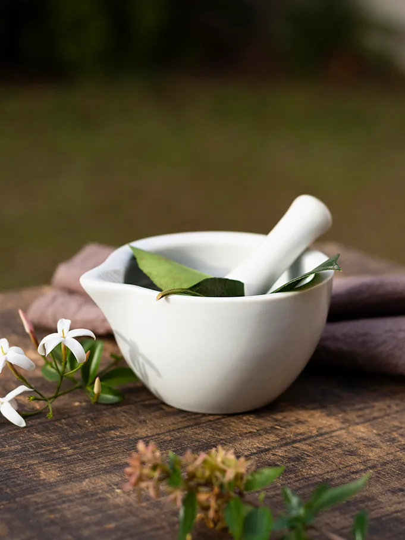
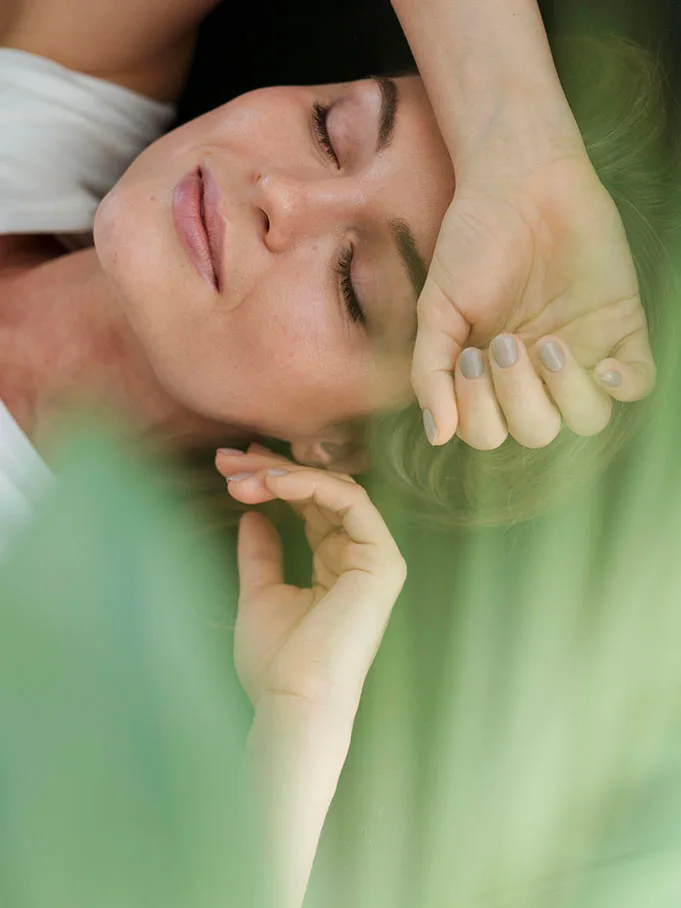

Mateusz Stuka
Naturoterapeuta
Nazywam się Mateusz Stuka i z pasją zajmuję się naturopatią oraz biorezonansem, skupiając się na zdrowiu i naturalnych metodach leczenia. Po utracie 35 kilogramów odkryłem radość ze zdrowego gotowania, a moją życiową zasadą jest dążenie do balansu – wierzę, że takie podejście pozwala mi w pełni cieszyć się życiem. Studiowałem na Śląskim Uniwersytecie Medycznym na kierunku Zarządzanie Ryzykiem Zdrowotnym oraz ukończyłem Akademię Naturopatii, gdzie pogłębiłem swoją wiedzę na temat zdrowia człowieka. Jestem współautorem publikacji naukowej pt. „Zdrowie kobiet w ujęciu interdyscyplinarnym. Część II. Uwarunkowania psychospołeczne” (2023), w której wykazałem, że aktywność fizyczna ma ogromny wpływ na zdrowie kobiet w każdym okresie życia.
W swojej pracy łączę metody konwencjonalne i niekonwencjonalne, aby wspierać organizm w procesie leczenia lub remisji choroby. Na podstawie szczegółowej analizy problemu diagnozuję jego przyczynę i pomagam ją wyeliminować. Wierzę, że organizm nie cierpi z powodu braku leków, lecz często z powodu niedoboru niezbędnych składników odżywczych, co prowadzi do różnych problemów zdrowotnych.
Od trzech lat uczestniczę w programie zdrowotnym, który skutecznie atakuje przyczyny chorób cywilizacyjnych, pomagając pacjentom wyjść nawet z pozornie beznadziejnych przypadków. Moją specjalizacją jest spersonalizowana profilaktyka zdrowotna, oparta na wynikach testów medycznych.
Konsultacje naturopatyczne
Dlaczego warto skorzystać z konsultacji naturopatycznych?

Holistyczne podejście
Wierzę, że zdrowie to nie tylko brak choroby. Zajmuję się całym człowiekiem – ciałem, umysłem i duchem. Skupiam się na odnalezieniu równowagi w życiu.

Indywidualne podejście
Każda osoba jest inna, dlatego dopasowuję zalecenia i terapie do Twoich unikalnych potrzeb oraz stylu życia.

Naturalne metody
W pracy korzystam z metod naturopatycznych, takich jak ziołolecznictwo, dietoterapia, terapia ruchowa oraz techniki relaksacyjne i poprawiające samopoczucie.
Co oferuję?
1.
Pierwsza konsultacja naturopatyczna
W trakcie 45-minutowej sesji przeprowadzę szczegółowy wywiad zdrowotny, analizując Twoje nawyki, styl życia oraz wszelkie dolegliwości. Na koniec przedstawię rekomendacje dotyczące dalszego postępowania.
2.
Konsultacje follow-up
W przypadku wystąpienia dolegliwości lub chęci kontynuacji wsparcia, oferuję sesje 45-minutowe, podczas których monitoruję postępy oraz dokonuję ewentualnych korekt w zaleceniach.
3.
Programy zdrowotne
Stworzę dla Ciebie spersonalizowany program zdrowotny obejmujący dietę, suplementację, ćwiczenia i praktyki relaksacyjne.
Zobacz, jak jeszcze mogę Ci pomóc

Biorezonans
Sesje oddechowe
Bioenergoterapia
Indywidualny koncert mis
Suche igłowanie
Masaż terapeutyczny

Czy konsultacje naturopatyczne są dla mnie?
- Masz problemy zdrowotne, które nie reagują na tradycyjne leczenie? Naturopatia może być pomocnym wsparciem.
- Interesujesz się holistycznym podejściem do zdrowia, uwzględniającym ciało, umysł i ducha?
- Chcesz zmienić swoje nawyki, ale nie wiesz, od czego zacząć?
- Pragniesz prowadzić zdrowy styl życia, lecz brak Ci wskazówek, jak to zrobić?
- Masz trudności z wyborem odpowiednich produktów lub diety?
- Czujesz się zagubiony w natłoku informacji o zdrowiu, żywieniu i chorobach?
- Chcesz wprowadzić zmiany, ale nie wiesz, jak się za to zabrać?
- Odczuwasz brak energii i siły do wprowadzenia zmian w swoim życiu?
- Masz wątpliwości dotyczące stosowanych leków i chcesz znaleźć naturalne alternatywy?
Koszt: 200 zł
Co zyskujesz, korzystając z naturoterapii?
- Zrozumienie swojego ciała i jego potrzeb.
- Narzędzia do radzenia sobie z codziennymi wyzwaniami zdrowotnymi.
- Podsumowanie konsultacji na adres e-mail.
- Wsparcie w dążeniu do zdrowego stylu życia.

Poznaj bliżej nasze metody holistycznego wsparcia
Badanie biorezonans
Kompleksowe badanie składu ciała „Quantum”
Zadbaj o swoje zdrowie dzięki nowoczesnemu biomagnetycznemu analizatorowi „Quantum”. To zaawansowane badanie, które obejmuje wszystkie kluczowe parametry zdrowotne. Wykorzystuje analizę fal elektromagnetycznych emitowanych przez Twoje ciało, dostarczając cennych informacji o stanie Twojego zdrowia.
Dlaczego warto?
- Wykryjesz niedobory witamin, minerałów i hormonów.
- Zidentyfikujesz wczesne stadia chorób, zanim pojawią się objawy.
- Otrzymasz wskazówki, jak poprawić swoje zdrowie poprzez suplementację lub inne terapie.
Jak przebiega badanie?
- Trzymasz w dłoni elektrodę przez kilka minut.
- Wynik analizujemy na miejscu w trakcie sesji (ok. 45 minut).
- Szczegółowy raport i zalecenia otrzymasz e-mailem w formacie PDF.
Zakres analizy
Badanie dostarcza 36 szczegółowych raportów, w tym:
- Stan układu krążenia, mózgu, kości i tarczycy.
- Ocena witamin, pierwiastków śladowych, toksyn i metali ciężkich.
- Analiza funkcji układu trawiennego, wątroby, płuc i nerek.
- Specjalistyczne raporty dla kobiet (ginekologia, cykl menstruacyjny) i mężczyzn (prostata, funkcje rozrodcze).
Co zyskujesz?
- Pełną analizę zdrowia organizmu w czasie rzeczywistym.
- Indywidualne zalecenia dopasowane do Twoich potrzeb.
- Możliwość wdrożenia działań poprawiających zdrowie na wczesnym etapie.
Cena: 450 zł
Suche igłowanie
Suche igłowanie to metoda terapeutyczna, która polega na wprowadzaniu cienkich igieł do punktów spustowych w mięśniach, czyli miejsc, które mogą być źródłem bólu i napięcia. Oto krótki opis tej metody:
Cel terapii:
Suche igłowanie ma na celu złagodzenie bólu, redukcję napięcia mięśniowego oraz poprawę funkcji ruchowych. Metoda ta może być skuteczna w leczeniu dolegliwości związanych z bólami pleców, głowy, szyi oraz w przypadku urazów sportowych.
Mechanizm działania:
Igły wprowadzane są w miejsca o zwiększonej wrażliwości, co może prowadzić do lokalnej reakcji mięśniowej. Umożliwia to uwolnienie napięcia oraz poprawę krążenia krwi w danym obszarze. Ponadto metoda może stymulować wydzielanie endorfin, co przyczynia się do zmniejszenia odczuwanego bólu.
Przebieg sesji:
Podczas sesji terapeuta przeprowadza szczegółowy wywiad oraz ocenę stanu pacjenta. Następnie, przy użyciu sterylnych igieł jednorazowego użytku, wprowadza je w wybrane punkty spustowe. Czas trwania zabiegu zazwyczaj wynosi od 15 do 30 minut, w zależności od indywidualnych potrzeb pacjenta.
Efekty uboczne:
Po zabiegu pacjenci mogą odczuwać lekkie siniaki, ból czy zmęczenie w miejscach wkłucia. Zwykle objawy te ustępują w ciągu kilku dni. Ważne jest, aby terapia była przeprowadzana przez wykwalifikowanego specjalistę, który ma odpowiednie przeszkolenie w zakresie suchego igłowania.
Przeciwwskazania:
Suche igłowanie nie jest zalecane w przypadku niektórych schorzeń, takich jak hemofilia, infekcje skórne czy ciąża. Zawsze warto skonsultować się z lekarzem przed rozpoczęciem terapii.
Sesja Access Bars
Sesja Access Consciousness Bars to technika terapeutyczna, która polega na delikatnym dotykaniu 32 punktów na głowie. Te punkty, zwane „barsami”, odpowiadają różnym obszarom życia, takim jak: zdrowie, finanse, relacje, kreatywność czy praca. Dotykając tych punktów, terapeuta aktywuje przepływ energii, co pozwala na uwolnienie zablokowanych emocji, przekonań czy myśli, które mogą ograniczać pełen potencjał osoby.
Na czym polega sesja?
Podczas sesji osoba leży w wygodnej pozycji, a terapeuta delikatnie dotyka wyznaczonych punktów na głowie. Działa to na zasadzie aktywowania i usuwania energetycznych blokad, co umożliwia zmianę w sposobie myślenia, odczuwania i postrzegania rzeczywistości. Sesja jest całkowicie bezpieczna, nieinwazyjna i nie wymaga od uczestnika aktywnego zaangażowania.
Jakie efekty daje sesja?
Sesje Access Bars mogą przynieść różne korzyści, w zależności od osoby i jej potrzeb. Do najczęstszych efektów należą:
- Zwiększenie poczucia spokoju, relaksu i odprężenia.
- Zmniejszenie stresu i napięcia.
- Uwolnienie od negatywnych przekonań, które mogą blokować sukcesy lub szczęście.
- Zwiększenie jasności umysłu, lepsza koncentracja.
- Zmniejszenie lęków i poprawa samoakceptacji.
- Poprawa jakości snu.
- Lepsze radzenie sobie z emocjami.
Dla kogo jest sesja Access Bars?
Sesje są odpowiednie zarówno dla dorosłych, jak i dla dzieci. Dzieci, które mają sesje Access Bars, często odczuwają natychmiastową ulgę, zwłaszcza jeśli zmagają się z emocjonalnymi trudnościami, takimi jak lęki, nadpobudliwość czy problemy w szkole. Dorośli mogą zyskać korzyści, takie jak poprawa jakości życia, większa zdolność radzenia sobie z codziennymi wyzwaniami oraz lepsze zarządzanie stresem.
Sesja Access Bars jest bezpieczna, nie wymaga wcześniejszego przygotowania i może być stosowana jako wsparcie w poprawie jakości życia oraz rozwoju osobistego.
Co mówią nasi specjaliści
2 filmy
Zapisz się na konsultację
Zapisz się na zajęcia
Wybierz aktywność, która odpowiada Twoim potrzebom i celom!
Zobacz nasz grafik i znajdź zajęcia, które wpisują się w Twój plan dnia. Niezależnie od tego, czy wolisz intensywny trening, relaksujące zajęcia Body & Mind, czy energetyczne lekcje tańca – znajdziesz tu coś dla siebie. Rozpocznij swoją przygodę z ruchem już teraz!